lorenz_partial_100d_7lat_additive_mse_p30_obsnoise001__lc_sweepProject: Lorenz_INDpartial_N100_D1_NormTrue_T7__JacobianODE
Launched: 2026-04-17T01:50:38Z
Completed: 2026-04-17T04:00:18Z
Outcome: complete_with_failures
Git: latent-JacobianODE @ f05d2ea
Expected runs: 9
lorenz_partial_100d_7lat_additive_mse_p30Description
Extends lorenz_partial_100d_7lat_additive_mse (p10) to prediction_steps=30, seq_length=45. Still most_recent recon, kl_null=0. LC weight swept.
Hypothesis
The p10 100-delay / 7-latent sweep under-represented strong contraction (λ_min ≈ −6 vs empirical ~−14). A longer rollout gives the dynamics MLP stronger pressure to learn correct integration over multiple Lyapunov times, which may pull the contraction spectrum closer to the empirical.
Success criteria
Swept axes (1): training.lightning.loop_closure_weight
Chosen run (by best_traj_loss): 5ona41iw — traj_loss=0.00079, MASE=0.6976, R²=0.9978, LC loss=3.421, epoch=101.0
Swept-axis values at chosen run: training.lightning.loop_closure_weight=0
⚠️ 3 run_idx slot(s) had multiple matching wandb runs — the best by best_traj_loss was kept; the others are listed below for audit:
- run_idx=0: chose 5ona41iw, dropped qxlwn990
- run_idx=4: chose ub7bqcft, dropped jrndl5j0
- run_idx=5: chose 8p5gxwdn, dropped wq8wfyxy
Runs analyzed: 9 (expected 9)
| run_idx | run_id | training.lightning.loop_closure_weight |
best_traj_loss | best_MASE | R² | LC loss | epoch |
|---|---|---|---|---|---|---|---|
| 0 | 5ona41iw |
0 | 0.00079 | 0.6976 | 0.9978 | 3.421 | 101.0 |
| 1 | i8nq6c39 |
1.0e-06 | 0.00112 | 0.7749 | 0.9969 | 1.812 | 65.0 |
| 2 | rd78e3p1 |
1.0e-05 | nan | nan | nan | 4.470 | — |
| 3 | o0lmk9do |
1.0e-04 | nan | nan | nan | 0.542 | — |
| 4 | ub7bqcft |
0.001 | 0.00084 | 0.7295 | 0.9977 | 0.035 | 101.0 |
| 5 | 8p5gxwdn |
0.01 | 0.00117 | 0.7739 | 0.9968 | 0.005 | 101.0 |
| 7 | f94958hz |
1 | 0.00212 | 1.0654 | 0.9943 | 0.000 | 123.0 |
| 6 | x8gguowy |
0.1 | 0.00240 | 1.0517 | 0.9935 | 0.000 | 102.0 |
| 8 | rav3nrkr |
10 | 0.03357 | 4.0534 | 0.9092 | 0.000 | 67.0 |
| Criterion | Verdict | Note |
|---|---|---|
| λ_min moves noticeably more negative than p10 baseline (~-6) | Unknown | |
| val/trajectory_r2 > 0.9 at best LC | Pass | Best R² = 0.9978; threshold > 0.9 |
| Σλ_i moves from ~-20 toward empirical ~-14 | Unknown |
Automated verdicts use simple numeric-threshold parsing and may mis-classify qualitative criteria. The Discussion section below takes precedence.
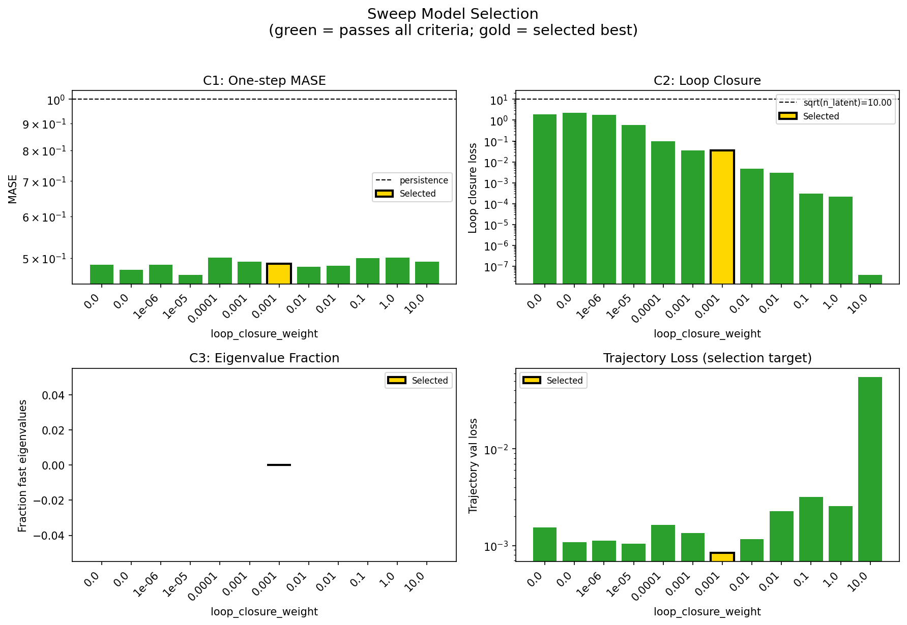
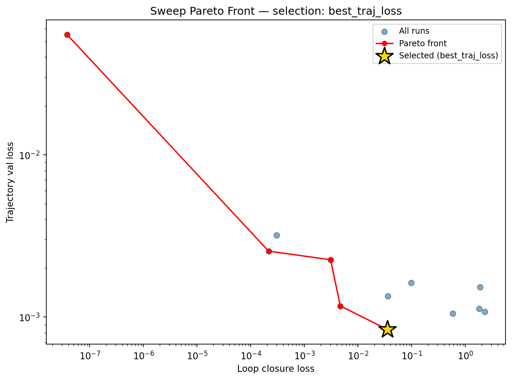
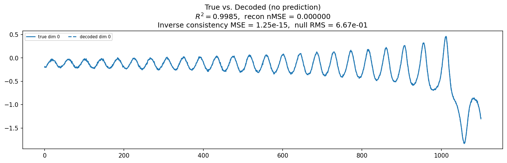
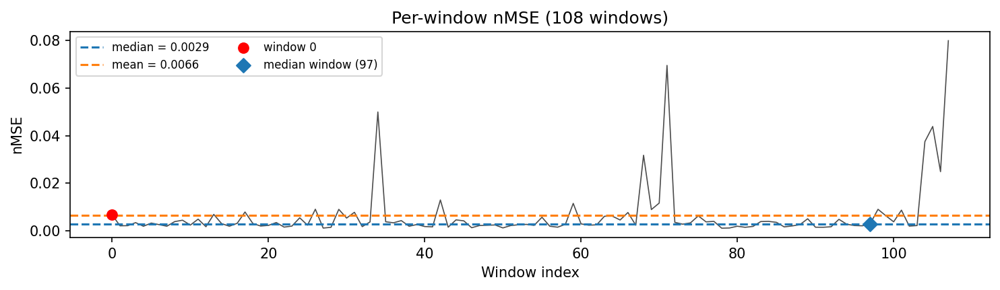
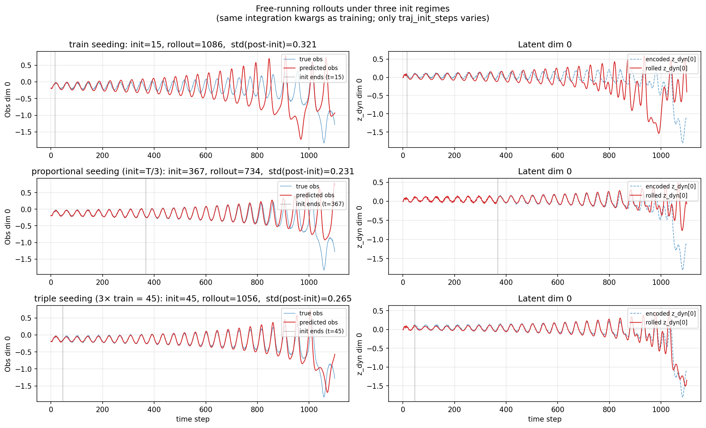
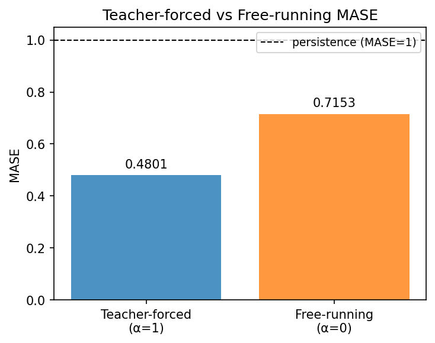
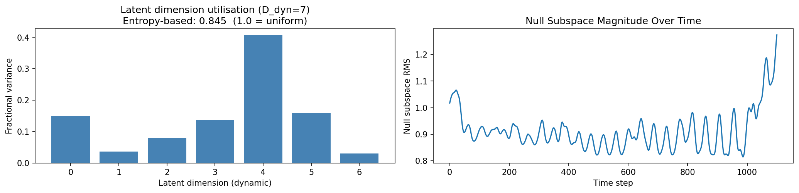
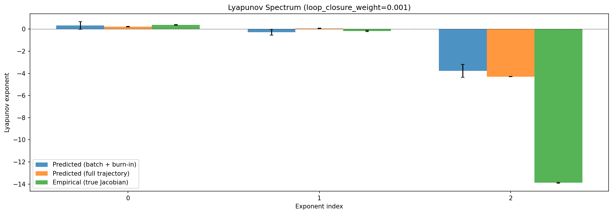
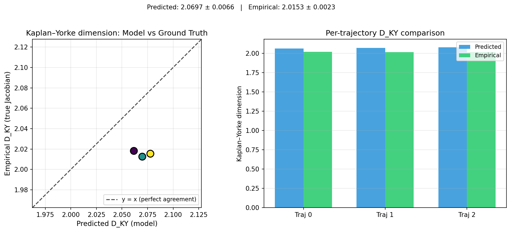
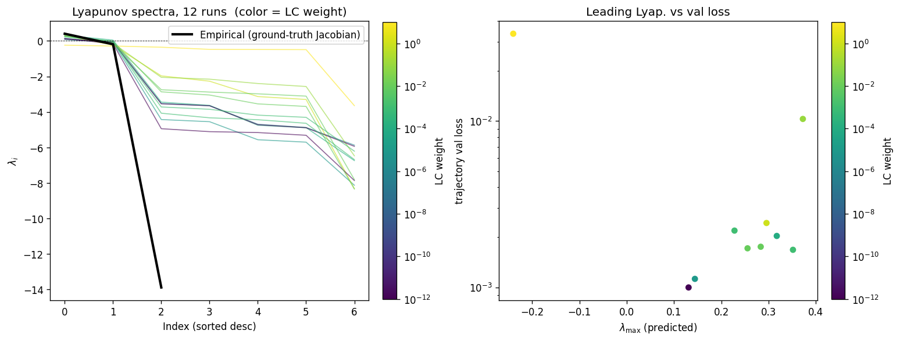
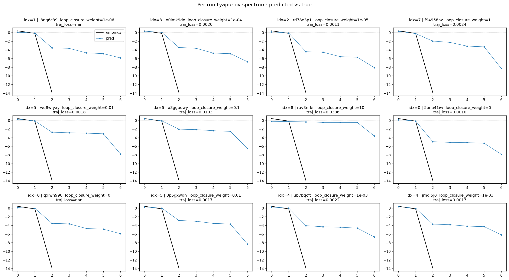
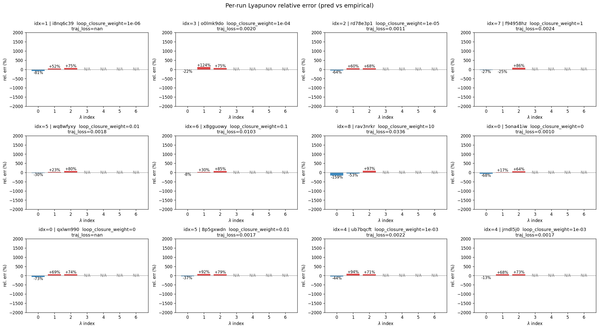
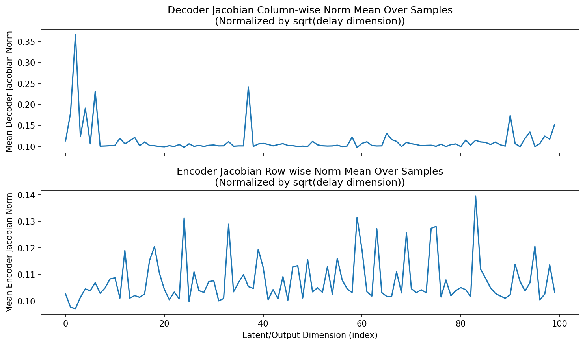
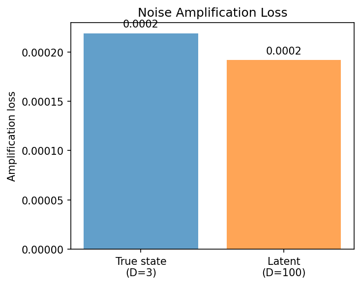
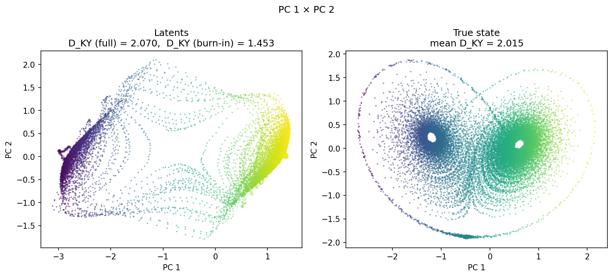
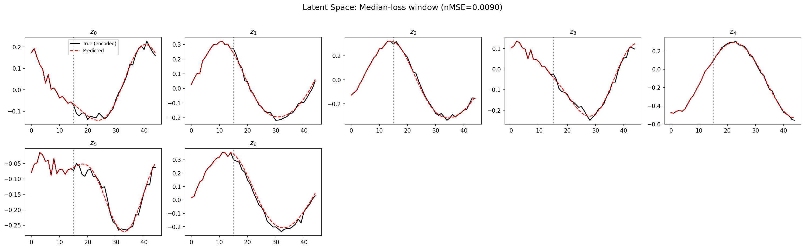
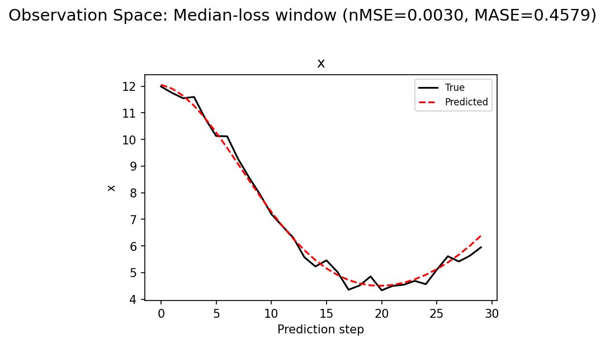
(to be written)
run_analytics stdoutrun_analyticsNo run_id provided — selecting best run from group 'lorenz_partial_100d_7lat_additive_mse_p30_obsnoise001__lc_sweep' ...
Found 12 total runs in JacobianODE/Lorenz_INDpartial_N100_D1_NormTrue_T7__JacobianODE (group=lorenz_partial_100d_7lat_additive_mse_p30_obsnoise001__lc_sweep)
All runs (state, loop_closure_weight, tangent_entropy_weight, kl_dyn_weight):
i8nq6c39: state=finished, lc=1e-06, te=0.0, kl_dyn=0.0
o0lmk9do: state=finished, lc=0.0001, te=0.0, kl_dyn=0.0
rd78e3p1: state=finished, lc=1e-05, te=0.0, kl_dyn=0.0
f94958hz: state=finished, lc=1.0, te=0.0, kl_dyn=0.0
wq8wfyxy: state=finished, lc=0.01, te=0.0, kl_dyn=0.0
x8gguowy: state=finished, lc=0.1, te=0.0, kl_dyn=0.0
rav3nrkr: state=finished, lc=10.0, te=0.0, kl_dyn=0.0
5ona41iw: state=crashed, lc=0.0, te=0.0, kl_dyn=0.0
qxlwn990: state=finished, lc=0.0, te=0.0, kl_dyn=0.0
8p5gxwdn: state=crashed, lc=0.01, te=0.0, kl_dyn=0.0
ub7bqcft: state=crashed, lc=0.001, te=0.0, kl_dyn=0.0
jrndl5j0: state=finished, lc=0.001, te=0.0, kl_dyn=0.0
slurm_timeout_min not found in any run config — falling back to 180 min
Including i8nq6c39 (lc=1e-06): use_all_runs=True (state=finished)
Including o0lmk9do (lc=0.0001): use_all_runs=True (state=finished)
Including rd78e3p1 (lc=1e-05): use_all_runs=True (state=finished)
Including f94958hz (lc=1.0): use_all_runs=True (state=finished)
Including wq8wfyxy (lc=0.01): use_all_runs=True (state=finished)
Including x8gguowy (lc=0.1): use_all_runs=True (state=finished)
Including rav3nrkr (lc=10.0): use_all_runs=True (state=finished)
Including 5ona41iw (lc=0.0): use_all_runs=True (state=crashed)
Including qxlwn990 (lc=0.0): use_all_runs=True (state=finished)
Including 8p5gxwdn (lc=0.01): use_all_runs=True (state=crashed)
Including ub7bqcft (lc=0.001): use_all_runs=True (state=crashed)
Including jrndl5j0 (lc=0.001): use_all_runs=True (state=finished)
Found 12 effectively-done sweep runs:
loop_closure_weight=0.0, tangent_entropy_weight=0.0, kl_dyn_weight=0.0 -> run_id=5ona41iw
loop_closure_weight=0.0, tangent_entropy_weight=0.0, kl_dyn_weight=0.0 -> run_id=qxlwn990
loop_closure_weight=1e-06, tangent_entropy_weight=0.0, kl_dyn_weight=0.0 -> run_id=i8nq6c39
loop_closure_weight=1e-05, tangent_entropy_weight=0.0, kl_dyn_weight=0.0 -> run_id=rd78e3p1
loop_closure_weight=0.0001, tangent_entropy_weight=0.0, kl_dyn_weight=0.0 -> run_id=o0lmk9do
loop_closure_weight=0.001, tangent_entropy_weight=0.0, kl_dyn_weight=0.0 -> run_id=jrndl5j0
loop_closure_weight=0.001, tangent_entropy_weight=0.0, kl_dyn_weight=0.0 -> run_id=ub7bqcft
loop_closure_weight=0.01, tangent_entropy_weight=0.0, kl_dyn_weight=0.0 -> run_id=8p5gxwdn
loop_closure_weight=0.01, tangent_entropy_weight=0.0, kl_dyn_weight=0.0 -> run_id=wq8wfyxy
loop_closure_weight=0.1, tangent_entropy_weight=0.0, kl_dyn_weight=0.0 -> run_id=x8gguowy
loop_closure_weight=1.0, tangent_entropy_weight=0.0, kl_dyn_weight=0.0 -> run_id=f94958hz
loop_closure_weight=10.0, tangent_entropy_weight=0.0, kl_dyn_weight=0.0 -> run_id=rav3nrkr
n_dims=100, n_latent=100, n_dyn=7, dt=0.0150
run=5ona41iw: DiagnosticMetrics(one_step_mase=0.48544707894325256, loop_closure_loss=1.8584074974060059, fast_eigenvalue_fraction=0.0, trajectory_val_loss=0.0015311388997361064) (from cache, n_batches=100)
run=qxlwn990: DiagnosticMetrics(one_step_mase=0.47509074211120605, loop_closure_loss=2.2841503620147705, fast_eigenvalue_fraction=0.0, trajectory_val_loss=0.0010818451410159469) (from cache, n_batches=100)
run=i8nq6c39: DiagnosticMetrics(one_step_mase=0.48617541790008545, loop_closure_loss=1.8115429878234863, fast_eigenvalue_fraction=0.0, trajectory_val_loss=0.0011247723596170545) (from cache, n_batches=100)
run=rd78e3p1: DiagnosticMetrics(one_step_mase=0.464398592710495, loop_closure_loss=0.5756409168243408, fast_eigenvalue_fraction=0.0, trajectory_val_loss=0.0010503451339900494) (from cache, n_batches=100)
run=o0lmk9do: DiagnosticMetrics(one_step_mase=0.5012394189834595, loop_closure_loss=0.09735587239265442, fast_eigenvalue_fraction=0.0, trajectory_val_loss=0.0016264350851997733) (from cache, n_batches=100)
run=jrndl5j0: DiagnosticMetrics(one_step_mase=0.49195191264152527, loop_closure_loss=0.03575555980205536, fast_eigenvalue_fraction=0.0, trajectory_val_loss=0.0013427409576252103) (from cache, n_batches=100)
run=ub7bqcft: DiagnosticMetrics(one_step_mase=0.48754647374153137, loop_closure_loss=0.03483300283551216, fast_eigenvalue_fraction=0.0, trajectory_val_loss=0.0008400846272706985) (from cache, n_batches=100)
run=8p5gxwdn: DiagnosticMetrics(one_step_mase=0.4820827543735504, loop_closure_loss=0.004660323262214661, fast_eigenvalue_fraction=0.0, trajectory_val_loss=0.0011718646856024861) (from cache, n_batches=100)
run=wq8wfyxy: DiagnosticMetrics(one_step_mase=0.4840472936630249, loop_closure_loss=0.0030754271429032087, fast_eigenvalue_fraction=0.0, trajectory_val_loss=0.0022566604893654585) (from cache, n_batches=100)
run=x8gguowy: DiagnosticMetrics(one_step_mase=0.499728262424469, loop_closure_loss=0.0003040399169549346, fast_eigenvalue_fraction=0.0, trajectory_val_loss=0.003197801997885108) (from cache, n_batches=100)
run=f94958hz: DiagnosticMetrics(one_step_mase=0.5014160871505737, loop_closure_loss=0.00021532965183723718, fast_eigenvalue_fraction=0.0, trajectory_val_loss=0.0025481125339865685) (from cache, n_batches=100)
run=rav3nrkr: DiagnosticMetrics(one_step_mase=0.4928510785102844, loop_closure_loss=3.789822500266382e-08, fast_eigenvalue_fraction=0.0, trajectory_val_loss=0.05500970780849457) (from cache, n_batches=100)
Ranking method: best_traj_loss
Best run ID: ub7bqcft
Best loop_closure_weight: 0.001
Best tangent_entropy_weight: 0.0
Best kl_dyn_weight: 0.0
Best traj loss: 0.000840
Criteria applied: ['C1', 'C2', 'C3']
Surviving: 12 / 12
Auto-selected run_id: ub7bqcft
======================================================================
PARETO FRONTIER RUNS (5 runs)
======================================================================
Run ID LC Loss Traj Val Loss
------------ -------------- --------------
rav3nrkr 0.000000 0.055010
f94958hz 0.000215 0.002548
wq8wfyxy 0.003075 0.002257
8p5gxwdn 0.004660 0.001172
ub7bqcft 0.034833 0.000840 <-- selected
======================================================================
RANKING METHOD COMPARISON (over 12 survivors)
======================================================================
Method Run ID LC Loss Traj Val Loss
---------------------- ------------ -------------- --------------
best_traj_loss ub7bqcft 0.034833 0.000840 <-- active
pareto_knee wq8wfyxy 0.003075 0.002257
geo_rank ub7bqcft 0.034833 0.000840
minimax_rank 8p5gxwdn 0.004660 0.001172
geo_log_score ub7bqcft 0.034833 0.000840
minimax_log_score f94958hz 0.000215 0.002548
======================================================================
Loading run ub7bqcft from JacobianODE/Lorenz_INDpartial_N100_D1_NormTrue_T7__JacobianODE ...
Train dataset shape: torch.Size([23232, 45, 100])
Validation dataset shape: torch.Size([7392, 45, 100])
Test dataset shape: torch.Size([3168, 45, 100])
Train trajectories dataset shape: torch.Size([22, 1101, 100])
Validation trajectories dataset shape: torch.Size([7, 1101, 100])
Test trajectories dataset shape: torch.Size([3, 1101, 100])
Loading checkpoint epoch=101-step=20400.ckpt...
Computing reconstruction ...
Computing MASE ...
Teacher-forced MASE: 0.4801
Free-running MASE: 0.7153
Computing latent utilization ...
Entropy-based utilization: 0.845
Null subspace mean RMS: 9.137816e-01
Computing Lyapunov exponents ...
Computing full-trajectory Lyapunov (3 test trajs, T=1101) ...
Predicted Lyapunov exponents (batch+burn-in, 128 windowed trajs):
λ_1 = +0.3200 ± 0.3485
λ_2 = -0.2881 ± 0.2710
λ_3 = -3.7681 ± 0.5893
λ_4 = -4.1964 ± 0.3426
λ_5 = -4.4282 ± 0.2769
λ_6 = -4.9783 ± 0.2616
λ_7 = -6.2073 ± 0.3518
Predicted Lyapunov exponents (full-length, 3 test trajs):
λ_1 = +0.2304 ± 0.0288
λ_2 = +0.0691 ± 0.0236
λ_3 = -4.2961 ± 0.0181
λ_4 = -4.4794 ± 0.0264
λ_5 = -4.6260 ± 0.0160
λ_6 = -4.8610 ± 0.0355
λ_7 = -6.6961 ± 0.0070
Empirical Lyapunov exponents (mean ± std):
λ_1 = +0.3846 ± 0.0251
λ_2 = -0.1716 ± 0.0444
λ_3 = -13.8799 ± 0.0398
Mean KY dim (predicted): 2.070 ± 0.007
Mean KY dim (empirical): 2.015 ± 0.002
Mean KY dim (burn-in): 1.453 ± 0.834
Computing prediction windows ...
Windows: 108 — nMSE min=0.0011, median=0.0029, mean=0.0066, max=0.0800
Computing long trajectory prediction ...
Computing encoder/decoder Jacobians ...
encoder_jacobian: (128, 100, 100)
decoder_jacobian: (128, 100, 100)
Computing amplification loss ...
Amplification loss — True state: 0.000219
Amplification loss — Latent: 0.000192